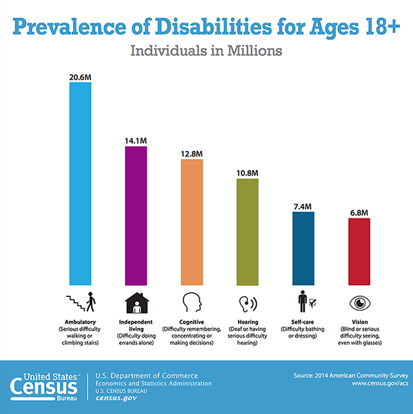
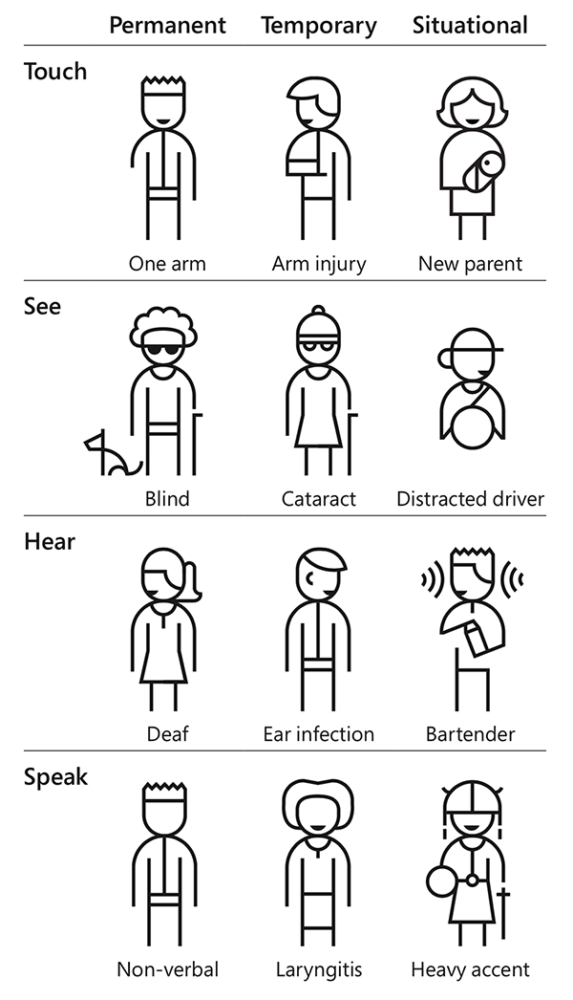

What is disability?
At ASU, our culture of inclusion and diversity enriches our campuses and expands our students' knowledge of the world around them. As with ethnic, religious and gender minorities, we appreciate and embrace the unique attributes, experiences, and abilities of people with disabilities.
"If people with disabilities were a formally recognized minority group, at 19% of the population, they would be the largest minority group in the United States."
According to the U.S. Department of Education, 11% of undergraduates have a reported disability. Because many students don't report an impairment to their school, the number of ASU undergraduates with a disability is likely much higher than 1 of every 10 students.

View Large Version | View Text Version | Download PDF
Disability Types
Disability is not a single phenomenon and does not have a single definition. Even within a disability type, there is a wide variation in how the individual is affected and/or can function. In addition, many disabilities are invisible or not readily apparent, such as epilepsy, ADHA, renal failure, diabetes, sleep disorders, etc.
The primary disability types include:
- Visual (e.g., blindness, low vision, color blindness)
- Auditory (e.g., deafness, hard of hearing)
- Motor (e.g., paralysis, cerebral palsy, missing/damaged limbs)
- Cognitive (e.g., learning disabilities, brain injury, psychiatric disorders)
Temporary, Situational and Permanent
Although many disabilities are permanent, a significant portion of the population experiences temporary or situational disabilities. In fact, most of us will face a limitation in our lifetime. For some, the disability will be permanent (e.g., age-related limitations); others will have one or more temporary or situational disabilities (e.g., a broken hand or trying to view a smartphone screen in bright sunlight). Nearly all of us will experience some type of disability at one time or another.

From Microsoft's Inclusive Toolkit Manual
View Large Version | View Text Version | Download PDF
From the University of Iowa, Accessibility 101
Models of Disability
The most prevalent models for understanding disability are:
- Medical model: focuses on disability as an attribute of the individual. In this model, disabilities are the product of a person's impairments.
- Social model: presents disability as an attribute of a society or environment. In this model, people with impairments are disabled by obstacles and barriers in their environment.